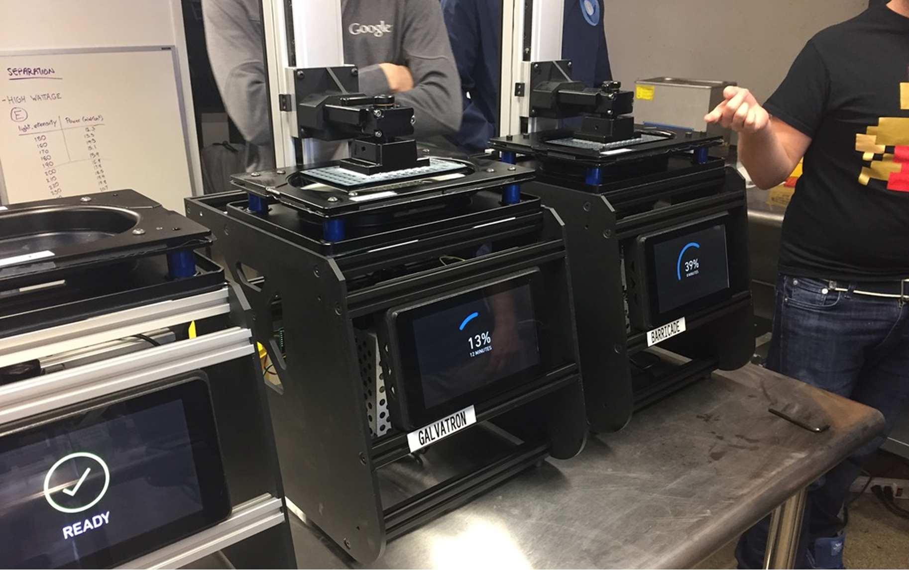
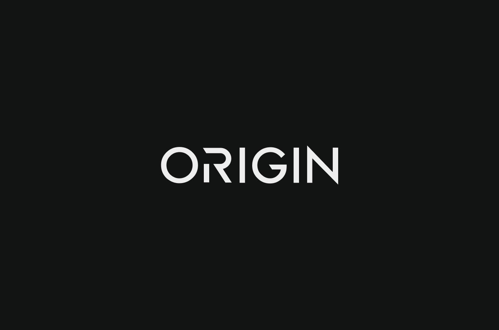
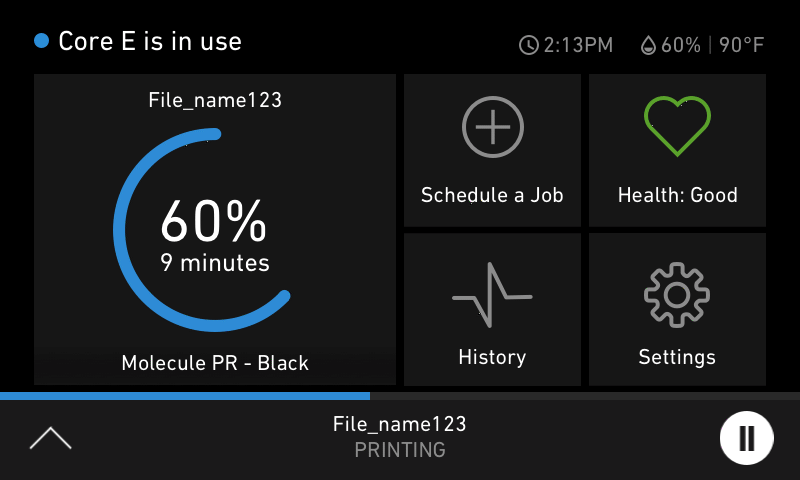
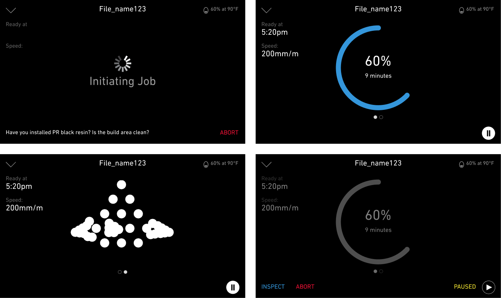
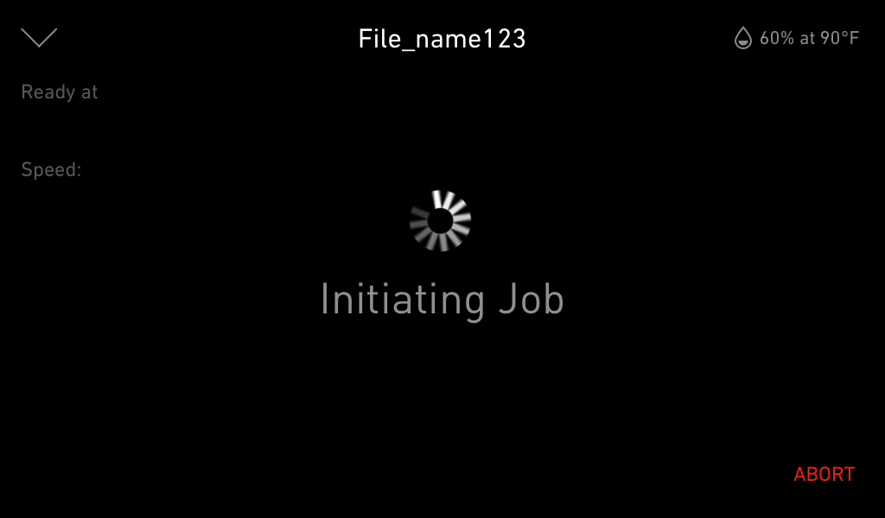
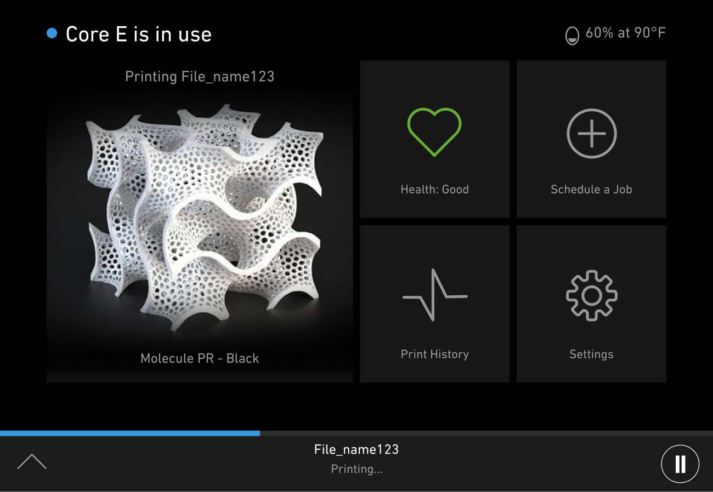

Overview
Origin was a 3D printing startup that developed the Origin One, a manufacturing-grade 3D printer utilizing Programmable PhotoPolymerization (P³) technology. I was hired to design the company logo and the user interfaces for both the embedded system on the printer and the web application used to manage a fleet of printers.

The Problem
Origin's innovative 3D printing technology required intuitive interfaces to ensure smooth operation and management. The embedded UI needed to be user-friendly for operators on the factory floor, while the web app had to provide administrators with comprehensive control over multiple machines. Both interfaces had to align with Origin's brand identity and support the company's vision of revolutionizing mass manufacturing through 3D printing.

The Solution
- Logo Design: Created a modern and distinctive logo that reflected Origin's innovative approach to 3D printing.
- Embedded UI: Designed an intuitive touchscreen interface for the Origin One printer, focusing on ease of use and efficiency for operators.
- Web App: Developed a responsive web application that allowed administrators to monitor and control a fleet of printers, track production metrics, and manage workflows.
- Collaboration: Worked closely with the CEO and CTO throughout the project to ensure designs aligned with both technical constraints and strategic vision.




The Impact
The designs I created were implemented 1:1 for both the embedded printer UI and the web app. These interfaces helped operators and administrators efficiently manage production workflows and contributed to a seamless user experience. My work played a central role in the product's usability and brand identity, supporting Origin's success and eventual acquisition by Stratasys, marking a major milestone in mass manufacturing 3D printing.